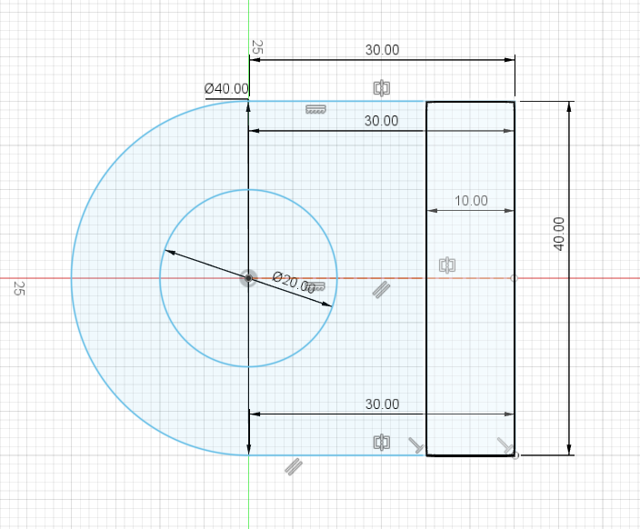
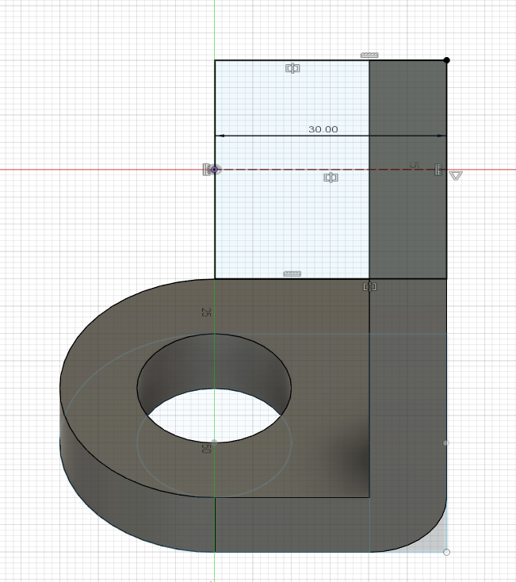
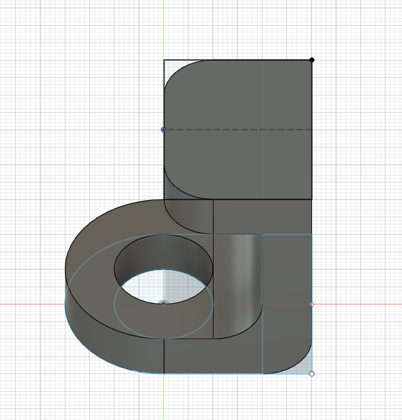

For our third exercise, we were tasked to do the same thing as exercise 2 but for a different model. For this exercise, i first started with a sketch of a circle from the origin of diameter 40mm. I then drew a rectangle with the dimensions of 30mmx40mm. I then drew a smaller circle from the same midpoint of the bigger circle, with the diameter of 20mm. Once that is done i drew a vertcal line that is 10mm away from the side of the rectangle.
I then extruded it by 10mm. As for the rectangle of 10mm, i extruded it byt 50.06mm. After Extruding it, I drew a new sketch on top of the extended rectangle. I drew a 30mmx40mm rectangle which i then extruded downwards by 10mm.
That is basically the final shape. I then did some fillet of the edges to give its final shape. My final product is shown below:
